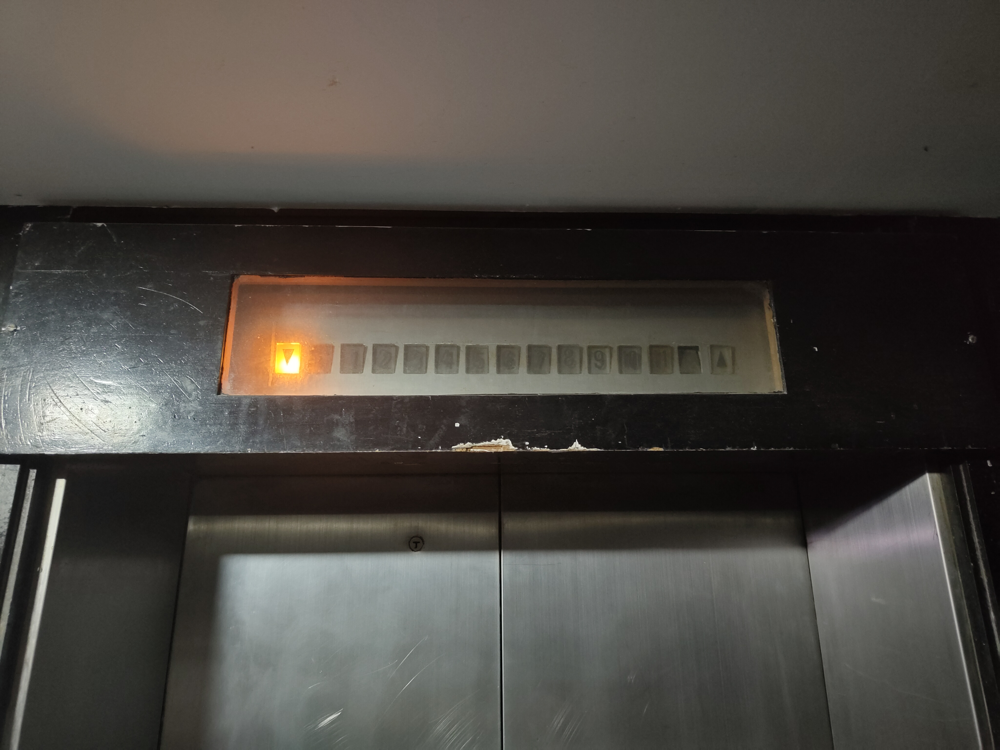

Mitsubishi continued manufacturing their Elepet series of lifts, dating from the 60s and 70s.
These lifts used black rounded buttons and analogue indicators.
For the first time, Univers typeface was used on the indicators as well as buttons.
|
Elepet lifts in duplex; with analogue floor indicator
integrated with the transom panel. |
Car position indicator embedded into the transom panel. |
| Car operating panel. This particular lift is rated for 450 kg, or 6 persons. | |
In the 1980s, Mitsubishi used brown square buttons as well as started to introduce digital indicators in lieu of their older analogue ones.
However, their base models lacked any car position indicator of any kind; and the buttons instead doubled up as analogue floor indicators.
| Two mid-1980s Mitsubishi Elepet lifts in duplex. | |

|
|
| Main floor hall station and digital floor indicator in a duplex setup. | Intermediate floor hall call station, without a position indicator. |
| Car interior of an mid 1980s Elepet lift. | |
|
Car operating panel. This paricular one isn't equipped with a digital floor indicator.
Rather, the buttons double up as analogue floor indicators. |
Car operating panel with a digital floor indicator.
It's currently showing the sixth floor; notice how its seven-segment LED display shows it like a smallcase 'b'. |
Around the mid-to late 1980s, Mitsubishi started production of the SP-VF and MP-VF (low and mid-high rise, respectively) as replacements for the Elepet.
These lifts brought digital displays as standard for the car position indicator; though was offered as an option for the hall position indicator.
Both SP- and MP-VF lifts still used brown buttons like those in the Elepet; though with slight tweaks, including a (slightly) larger font.
| SP-VFs with standard-issue hall call station. | |
| Duplex setup. | Simplex setup. |
| Standard-issue hall call station with vertical analogue position indicators. | |
| For duplex setups. | For simplex setups. |
|
A duplex setup of SP-VFs, with transom-mounted digital floor indicators; as well as a flush-mounted hall call station. |
|
|  | |
|
Analogue floor indicator mounted on the transom panel.
Though this design dates back to the 1970s; Mitsubishi still offered this as an option for SP-VF lifts. |
|
| Car interior with patterned silver interiors. |
Car interior of another SP-VF, using a more relaxed turquoise and white colour scheme
as opposed to the more regular silver or grey. |

|
|
| Car operating panel; mounted on the right corner at a 45 degree angle. | |
| Top floor hall call station and position indicator in a duplex setup. |